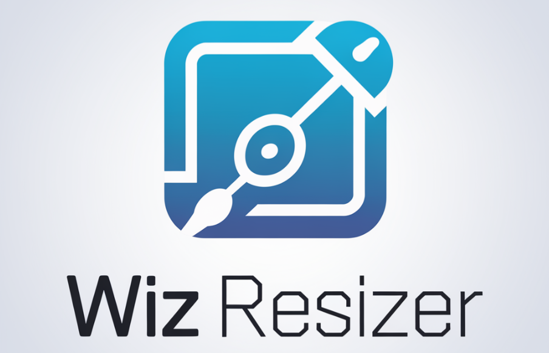
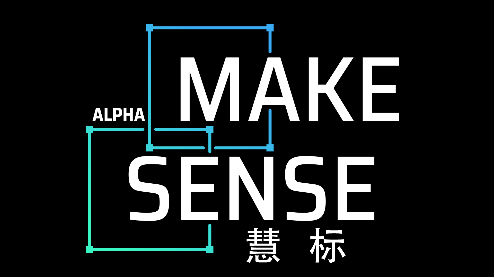

LED 灯牌编辑器(BmpBadge)
修改 LED 灯牌内容和显示效果，支持显示图标和自定义图案。

Wiz Resizer
支持批量调整图片尺寸，并自动补边以符合长宽比需求。

慧标(Make-Sense)
一款图像标注工具，支持目标检测数据集标注，支持矩形、点、线、多边形和多种导出格式。
修改 LED 灯牌内容和显示效果，支持显示图标和自定义图案。

支持批量调整图片尺寸，并自动补边以符合长宽比需求。

一款图像标注工具，支持目标检测数据集标注，支持矩形、点、线、多边形和多种导出格式。